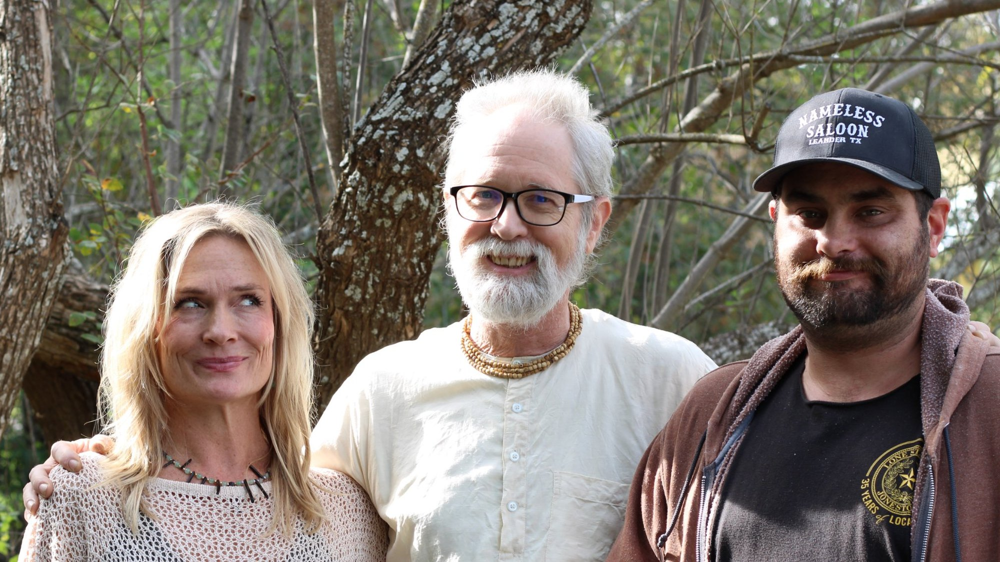

Madhu (MAH-doo) means “sweet.”
Eastern-tinged country blues and Americana from the Texas Hill Country.
The band
Madhu is a three-piece band from the Texas Hill Country near Austin, playing original songs and classic covers. Their name means “sweet,” and their sound blends an Eastern influence with country blues and Americana — mystical in spirit, true to its Texas roots.